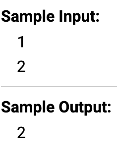

Условный оператор - if
Оператор if служит для того, чтобы выполнить какую-либо операцию в том случае, когда условие является верным. Условная конструкция в С++ всегда записывается в круглых скобках после оператора if. По-английски «если» звучит как “if”, а «иначе» как “else”.
Внутри фигурных скобок указывается тело условия. Если условие выполнится, то начнется выполнение всех команд, которые находятся между фигурными скобками.
if (num < 10) {
cout << "Это число меньше 10." << endl;
}
else {
cout <<"Это число больше либо равно 10." << endl;
}
if (num < 10){ Если (Число < 10){
} }
cout << "Это число меньше 10." << endl;
}else{ }иначе делаем{
cout <<"Это число больше либо равно 10." << endl;
}
Каждому оператору if соответствует только один оператор else. Совокупность этих операторов — else if означает, что если не выполнилось предыдущее условие, то проверить данное. Если ни одно из условий не верно, то выполняется тело оператора else.
Если после оператора if, else или их связки else if должна выполняться только одна команда, то фигурные скобки можно не ставить
Вроде ничего сложного приступим к практике
Задача 1
Даны два целых числа. Программа должна вывести единицу, если первое число больше второго, двойку, если второе больше первого, или ноль, если они равны.

#include <iostream>
using namespace std;
int main() {
int num1, num2;
cin >> num1 >> num2;
if (num1 > num2){
cout<<"1";
}
else if (num1 < num2){
cout << "2";
}
else {
cout << "0";
}
return 0;
}
Теория - else if
Условие if может иметь несколько блоков else if (в противном случае, если). Они используются, если нужны дополнительные условия:
Задача 2
Даны три целых числа. Определите, сколько среди них совпадающих. Программа должна вывести одно из чисел: 3 (если все совпадают), 2 (если два совпадает) или 0 (если все числа различны).
#include <iostream>
using namespace std;
int main() {
int num1, num2, num3 ;
cin >> num1 >> num2 >> num3;
if ((num1 == num2)&&(num1 == num3)&&(num2==num3)) {
cout << "3";
}
else if ((num1 != num2)&&(num1 != num3)&&(num2 != num3)){
cout << "0";
}
else {
cout << "2";
}
return 0;
}